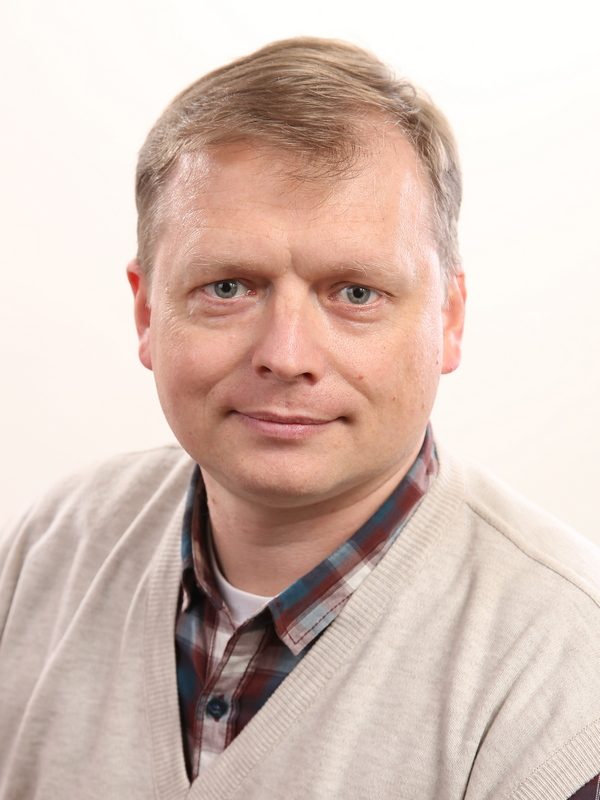

Юрий Стайнов
Дата рождения: 18.02.1980 (39 лет)
Город: Запорожье
Почему Front End?
Всегда думал, что это скучно. Но по работе пришлось столкнуться, и я понял, что это не так.
Это действительно может быть интересно, увлекательно... и полезно.
Профессиональные навыки
- Ansys APDL Mechanical
- AutoCad
- Photoshop
- MS Office
Знания языков
- Українська - эксперт
- English - средний
- Русский - эксперт
Опыт работы
-
2018 FitSoft BV
Mendix developer
-
2007-2018 ПрАТ "ВІТ"
Научный сотрудник
-
2005-2007 ОАО "Мотор Сич".
Технолог
-
2001-2004 ГП "Углекомпозит"
Пропитчик
Образование
-
2014 ЗНТУ. Инженерия программного обеспечения.
Незавершенное
-
2007 ЗНТУ. Прикладное материаловедение.
Специалист.
-
1997 СШ №15, г. Запорожье
Интересы
- Все, что связано с авиацией
- Математика и ее применение в программировании
- CNC
- Технологии производства изделий из различных материалов
- Механизмы